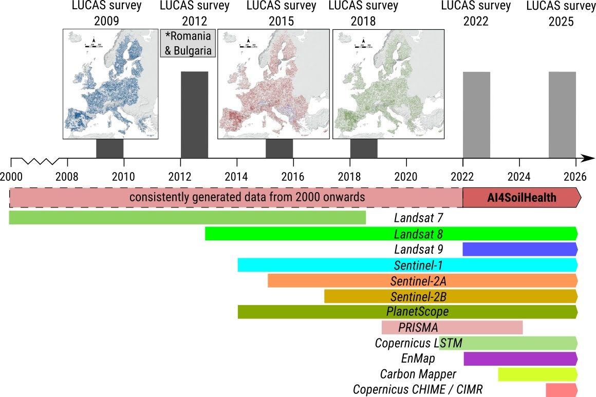
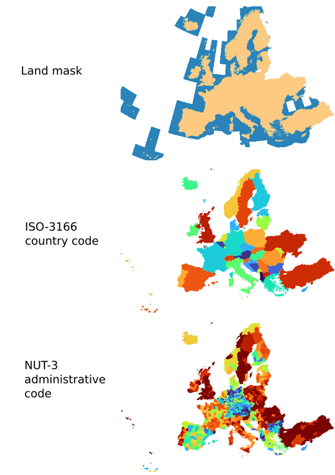

Soil Health Data Cube specifications
The 7-step framework for soil health assessment
In a nutshell, Soil Health Data Cube is a building block and infrastructure for monitoring soil health across EU. The general idea of the SHDC4EU is that it serves some standard processes that help inform land owners / land managers about the soil health state of their land using open data. These processes are meant to help future users of the AI4SoilHealth app to quickly find out about the site, explore land potentials based on the state-of-the-art models and start taking concrete actions towards restoring land / improving soil health. This is closely connected with the main expected impacts of the AI4SoilHealth project (to make soil health data easier to access and provide tools and standards for soil health monitorng). In simple terms, the 7–step soil health assessment framework (Hengl 2024) includes:
- Assess the history of a site (last 30+ years) provide answers to questions e.g.:
- How much SOC has been gained / lost over the last 30 years?
- Which chemical and physical soil properties changed the most?
- Is there any land/soil degradation and how significant is it?
- How has agronomic management impacted soil health?
- How much did the land cover / vegetation cover change? What is the main change class?
- How much did the landscape heterogeneity change over time?
- Determine current state of soil (actual year):
- What is the current state of physical and chemical soil properties?
- What is the current (WRB) soil type / main soil forming processes and soil states?
- What are the current derived soil properties?
- What are the current macronutrient stocks in the soil?
- Determine soil potential (next 10, 20, 30 yrs):
- What is the SOC sequestration potential of this soil?
- What is the agricultural potential of this soil?
- What are the other potential ecosystem functions provided some land use change or mitigations?
- Collect extra soil samples, send to lab, and add to training points:
- Generate a sampling design that helps increase mapping accuracy. Optimize the number of samples while taking into account the costs of sampling.
- Collect new samples and send them to the lab.
- Import new local data then re-analyze and re-asses points 1, 2 and 3.
- Import new local samples / results and add to the training points. Re-assess local prediction accuracy.
- Repredict layers in SHDC4EU for steps #1, #2 and #3.
- Suggest concrete KPI’s (per farm / per land unit):
- Provided that soil potential assessment reveals a significant gap between potential and actual.
- Either directly provide concrete measures to help increase soil health and/or provide links to documents / organizations that can directly help increase soil health.
- Track progress per farm and re-assess if required:
- Every 1–2 years update the indicators (pan-EU).
- Compare with the planned transition in #6. If necessary recommend re-assessment.
This framework can be either apply to assess health of a specific site (either in the field using a mobile phone app, or in the office using a desktop app), or complete farms / administrative units. We, thus, aim to complete the data cube with primary and derived soil variables that can directly serve this framework, and especially so that can be worked alongside other Work Packages in the project in their testing of methodology.
Predictive soil mapping based on Machine Learning and HPC
WP5 — with the tasks T5.2 Development of AI4SoilHealth computing engine and T5.3 Development of AI4SoilHealth Indicators data cube) — aims at implementing fully automated predictive soil mapping at high spatial resolution using large datasets (e.g. whole of Europe at 30-m spatial resolution). Prepared harmonized point datasets will are overlaid against time-series of EO images and/or static terrain-based or similar indices. These are then be used to predict values of target variables in 2D, 3D and 2D+T, 3D+T. The general workflow for predictive soil mapping based on Spatiotemporal Machine Learning and High Performance Computing (HPC) and assumes that all point data is analysis-ready, representative and correlates with the EO / covariate layers i.e. can be used to produce usable spatial predictions. Automated predictive soil mapping is currently implemented via the Python library scikit-map using OpenGeoHub’s High Performance Computing infrastructure.
The key interest of WP5 is to produce pan-EU predictions at the highest possible spatial resolution and that can directly serve soil health assessment at continental scale. Some variables are, however, not available for the whole of pan-EU, and some point datasets will be produced experimentally and used for testing purposes only. Hence, within the WP5, all soil variables are modeled / mapped under one the following 3 tiers:
- Tier 1: Pan-EU, production ready variables: usually based on LUCAS + national soil datasets;
- Tier 2 (internal, under construction): National / in-situ data: Tested locally, then upscaled to whole of EU; usually based on collaboration of WP3,4,5,6;
- Tier 3 (internal, under construction): Pan-EU, new experimental variables (currently not in the LUCAS soil and most likely can not be modeled/mapped across EU, but can only be used to assess soil health at site); based on the collaboration of WP3,4,5;
We expect that project partners + pilots will feed data for Tier 2 and Tier 3. However, not everything can be mapped across the EU, hence some variables will eventually stay available only locally and a small selection of variables will be available in-situ only i.e. these will not be mapped at all.
Training points
Quality of the outputs would most likely be dictated by the following four key aspects of modeling:
- The general modeling design i.e. how appropriate the statistical / machine learning methods are. For example: are all casualties considered, are all distributions represented, are all statistical assumptions met?
- Predictive performance of the algorithms used i.e. is the best / fastest algorithm used for modeling? Is the algorithm robust, noise-proof, artifacts-proof etc?
- Quality and diversity of the covariate layers used.
- Quality and spatial and feature space representation of training points.
Assuming that #1 and #2 are optimized, then the only remaining factors that control success of the modeling / mapping processes are aspects #3 and #4 i.e. the quality of covariate layers and quality of training points. In the past (prior to 2010), it was relatively difficult to produce pan-EU maps of soil health indicators as there was only limited training point data. Thanks to the European Commission’s LUCAS soil project, we now have 3–4 repetitions of ground measurements of soil properties of highest quality (about 22,000 sites are revisited per period) (see figure below). This is a unique opportunity to test building high resolution predictions, including dynamic soil property predictions. Ideally, such testing should be a joint effort of the AI4SoilHealth consortium, in an open collaboration with JRC and members of other sister projects funded by the same Soil mission.
Nevertheless, LUCAS soil is also not an ideal dataset for predictive mapping. Hence producing SHDC4EU faces two serious challanges: (1) LUCAS soil is a top-soil dataset, although there is now intention to sample also subsoils, (2) it covers only a number of physical and chemical soil variables (10–15), and soil types or similar are typically not recorded, making this largely a partial pedological survey.
To improve usability of predictions produced using LUCAS we have decided, in this project, to combine both LUCAS and the highest quality legacy national soil datasets. These synchronized and analysis ready fusions of soil laboratory points and observations will be generated by T4.6 “Integration and harmonization of in-situ and ancillary observations”. We anticipate that this will be a long process hence, in order to prevent serious delays, we will start producing SHDC4EU predictions, then in each iteration try to improve predictions as new countries join the campaign of contributing their data (under a standard Data Sharing Agreement) for the purpose of data mining i.e. producing open soil information for everyone.
Covariate (base) layers
The second important aspect that will determine the quality of the SHDC4EU outputs is the quality of covariate layers. Quality of the covariate layers is basically determined by three things: (1) spatial and temporal resolution, (2) spectral / thematic content, (3) general quality of data in terms of completeness, consistency, correctness and quality of metadata. For producing SHDC4EU we plan to use an extensive compilation of covariate (base) layers to produce predictions for SHDC4EU. Already available layers for continental Europe include (https://EcoDataCube.eu):
- Land mask (pan-EU: https://zenodo.org/doi/10.5281/zenodo.8171860) + World Settlement Footprint (WSF) i.e. world buildings 2000-2015, 2019 (https://geoservice.dlr.de/web/maps/eoc:wsfevolution and https://geoservice.dlr.de/web/maps/eoc:wsf2019);
- Digital Terrain Model variables at 6–scales 30-m, 60, 120, 240, 480 and 960-m:
- Elevation, slope (%), min- max-curvature,
- Hillshade, northness, easterness,
- Positive, negative openness,
- Topidx (TWI), geomorphon classes (10), catchment area, LS factor,
- Lithological (surface geology) map of pan-EU at 250-m (https://zenodo.org/doi/10.5281/zenodo.4787631);
- Bimonthly / quarterly GLAD Landsat composites (all bands + biophysical indices, 2000–2022) (explained in: https://doi.org/10.21203/rs.3.rs-4251113/v1):
- Green, Red, NIR, SWIR1, SWIR2,
- NDVI, FAPAR,
- NDTI, NDWI, BSF,
- Cumulative NDVI, NDTI and BSF;
- Climatic variables at 1-km (long-term or monthly series):
- CHELSA Climate Bioclimatic variables (https://chelsa-climate.org/bioclim/);
- CHELSA monthly precipitation time-series 2000–2022 (https://chelsa-climate.org/timeseries/);
- MODIS LST daytime and nighttime monthly time-series 2000–2022 (https://zenodo.org/doi/10.5281/zenodo.1420114);
- MODIS monthly water vapor time-series 2000–2022 (https://zenodo.org/doi/10.5281/zenodo.8193738);
- Cumulative annual precipitation (2000–2022);
- Monthly / annual snow images 2000-2022 e.g. DLR Snow pack at 500-m (https://geoservice.dlr.de/web/maps/eoc:gsp:yearly):
- Long-term monthly snow probability time-series at 500-m (https://doi.org/10.5281/zenodo.5774953);
- Cumulative annual snow probability 2000–2022;
- Surface water dynamics: occurrence probability of water long-term 1999–2021 (https://glad.umd.edu/dataset/global-surface-water-dynamics);
- Optional: Global Flood Database v1 (2000-2018) at 250-m annual flood event (http://global-flood-database.cloudtostreet.info/);
- Light at night time-series at 500-m resolution 2000–2022 (https://zenodo.org/doi/10.5281/zenodo.7750174);
- Cropland extent at 30-m for 2000 to 2022 based on (https://glad.umd.edu/dataset/croplands);
- Bare soil percent and photosythetical vegetation percent annual for 2000 to 2022 based on the MODIS MCD43A4 product (500-m spatial resolution);
In addition to the existing layers above, we will also generate a number of novel layers tailored specifically for the purpose of representing land use practices and potential soil degradation factors. This include:
- BSI, Bare Soil Index (Mzid et al. 2021) and annual BEF, Bare Earth Fraction (e.g. proportion of pixels with NDVI <0.35 based on 16–day and/or bimonthly data; there are other possible thresholds combination that can be used to optimize the results),
- NDTI, Normalized Differential Tillage Index (Ettehadi Osgouei et al. 2019),
- NOS, Number of Seasons / NOCC,** Number of Cropping Cycles**,
- LOS, Length of Seasons / CDR, Crop Duration Ratio (Estel et al. 2016),
- Crop-type based on EuroCrops dataset,
Note that from all covariate layers listed above, 16-day / bimonthly / quarterly GLAD Landsat composites (all bands + all indices, 2000–2022) are the largest part of the data to be used taking almost 20TB of storage (in compressed format).
Predictive mapping and derivation methods
Based on the availability of the training points and nature of the target variable in the SHDC4EU, we will either predict or derive soil variables from primary variables. The output soil health indicators can, thus, be considered of type either:
- Predicted dynamic pan-EU variables (2000–2022+) available at standard depth intervals (0–20, 20–50, 50–100, 100–200 cm).
- Predicted static pan-EU variables.
- Predicted and/or simulated pan-EU variables i.e. results of predictions of future conditions, scenario testing, simulations, process-based modeling.
- Derived pan-EU variables and indices.
- In-situ only variables.
Most of the soil chemical and biological variables are mapped as dynamic variables with annual or 5–year estimates (e.g. 5 maps for period 2000–2025) and at multiple depths (Witjes et al. 2023). This means that the amount of produced data can be significant if predictions are also provided per depth. For example, to map soil organic carbon content (weight %), we can predict 23 annual maps at 4–5 standard depths resulting in over 180 images (assuming that we also produce prediction errors per pixel). AI4SoilHealth tasks T5.5 “Development of AI4SoilHealth present and future soil degradation products”, T5.6 “Development of AI4SoilHealth forecasting services”, and T5.7 “Development of AI4SoilHealth soil functions evidence / model chains” will also generate large amounts of predicted and/or simulated pan-EU variables i.e. results of predictions of future conditions, scenario testing, simulations, process-based modeling.
The following predictive soil modeling methods are considered for use so far for generating SHDC4EU:
- 2D and 3D predictive soil mapping (static predictions, time is ignored).
- 2D+T predictive soil mapping spacetime.
- 3D+T predictive soil mapping spacetime.
- Predictive soil mapping focused on long-term indices.
- Derivation from primary data.
- Derivation using Pedo-transfer functions.
- Derivation / simulations using Mechanistic model (iterative).
- Derivation of future projected predictions (scenario testing).
For each derivation method we use sets of algorithms, usually implemented in python or R programming languages. These are documented in detail and eventually allow for complete reproducibility of results; most importantly we do a series of benchmarking (listed in further sections) to compare predictive performance and select the algorithm that is most accurate + most robust at the same time. In the tasks T5.5 Development of AI4SoilHealth present and future soil degradation products, T5.6 Development of AI4SoilHealth forecasting services and T5.7 Development of AI4SoilHealth soil functions evidence / model chains, also process-based modeling can be used, especially to generate potential soil ecosystem services etc. Such modeling is at the order-of-magnitude more computationally demanding than predictive mapping hence we expect that these outputs will be of limited spatial detail (1-km) and or available only for experimental testing.
Targeted soil and soil-health variables
The general objective of the SHDC4EU is to serve best possible, most detailed, complete and consistent predictions of the the number of targeted soil health indicators in the EU Mission’s “Implementation Plan: A Soil Deal for Europe”:
- presence of pollutants, excess nutrients and salts,
- soil organic carbon stock,
- soil structure including soil bulk density and absence of soil sealing and erosion,
- soil biodiversity,
- soil nutrients and acidity (pH),
- vegetation cover,
- landscape heterogeneity,
- forest cover.
If these are available for the complete land mask of pan-EU area, these can then be used to assess soil degradation state (e.g. salinization / sealing level and trends, concentration of excess nutrients and pollutants and trends, erosion state and trends, loss of SOC and trends etc), current soil properties and soil potential in terms of potential ecosystem services / potential SOC sequestration etc, potential productivity of soil, potential soil biodiversity etc. The working version of what we find as feasible to map at high spatial resolution is provided below.
Note that some of the soil health indicators recommended by the European Commission / JRC, are not defacto soil variables (e.g. vegetation cover, landscape heterogeneity, forest cover) but will be generated in this project and integrated into SHDC4EU. Some potential options to represent the vegetation cover, landscape heterogeneity etc include:
- Canopy height, data already available for EU but could also be improved by outputs from the Open-Earth-Monitor project,
- GPP, Gross Primary Productivity (bimonthly and/or annual; based on the last 2–5yrs),
- Land cover and land use / cropping systems and applications (categories e.g. based on the EuroCrops), producing cropping system maps for the EU;
However, producing cropping system maps for the EU, even only for the recent year is not trivial and producing such data should is at the moment optional.
List of target soil variables that will be delivered in the SHDC4EU includes dynamic soil properties covering period 2000–2025+:
- Soil organic carbon density (kg/m3) ISO 10694. 1995 for 0–20, 20–50, 50–100 cm depth intervals, 5–year estimates;
- Soil carbon stock change (t/ha/yr) ISO 10694. 1996 for 0–20, 20–50, 50–100 cm depth intervals; long-term
- Soil pH in a suspension of soil in water (-) ISO 10390. 1994 for 0–20, 20–50, 50–100 depth intervals, 5–year estimates;
- Soil pH measured in a CaCl2 solution (-) ISO 10390. 1994 for 0–20, 20–50, 50–100 cm depth intervals, 5–year;
- Soil total nitrogen content (dg/kg) ISO 11261:1995 for 0–20, 20–50, 50–100 cm depth intervals, 5–year;
- Soil bulk density (t/m3) Adapted ISO 11272:2017 for 0–20, 20–50, 50–100 cm, 5–year;
- Soil texture fractions (sand, silt, clay) (g/g) ISO:11277 for 0–20, 20–50, 50–100 cm depth intervals, 5–year;
- Soil WRB subgroup (factor / probs) based on the WRB2022 classificaton system for 0–200 cm, long-term;
- Depth to bedrock (cm) up to 200 cm, long-term;
- Extractable potassium content (mg/kg) USDA−NRCS, 2004 for 0–20, 20–50, 50–100 cm depth intervals, 5–year;
- Carbonates content CaCO3 (g/g) ISO 10693:1995 for 0–20, 20–50, 50–100 cm depth intervals, 5–year;
- Extractable Phosphorus content (Olsen) (mg/kg) ISO 11263. 1994 for 0–20, 20–50, 50–100 cm depth intervals, 5–year;
- Monthly Gross Primary Productivity (kg/ha/yr) FluxNET bi-monthly;
- Bare Soil Fraction (m2/m2) Landsat-based, 5–year;
Variable registry
For each variable we will organize a soil variable registry system, so that each variable should have unique (short-as-possible) code. As simple coding system for SHDC4EU is suggested where the variable name is a combination of the three components:
- generic variable name,
- specific laboratory / field / O&M method (ISO standard or similar),
- measurement unit,
For example, for SOC content in weight percent we recommend using oc_iso.10694.1995_wpct (dry combustion) or oc_iso.17184.2014_wpct; for SOC in permiles you can use e.g. oc_iso.10694.1995_wpml. Note that here we use ISO code, however since ISO is highly commercial and not-practical for open datasets, we recommend using the ISO code (allowed), but in fact pointing to a scientific reference i.e. a publication or PDF that is at the order of scale easier to obtain (instead of pointing to ISO website or similar). For example the variable oc_iso.10694.1995_wpct can be linked to the scientific reference Nelson et al. (1982) (also used by ISO).
Soil variable names can be also provided in a shorter version (assuming that only 1 reference method exists) as a combination of the variable name and measurement unit code e.g. oc.wcpt. It is very important that all partners in the project consistently use the same codes, and if there are updates in the naming convention that they refer to the version of the code.
Spatio-temporal reference
The general interest of this project is to produce a time-series of predictions of key soil/vegetation/land use variables with either annual or monthly support and covering the period 1997–2022+ and at highest spatial resolution e.g. 30-m. For variables that vary by depth, we will predict at 5 standard depths (0, 20, 50, 100 and 200 cm), then aggregate values to standard depth intervals:
- 0–20 cm (topsoil) LUCAS standard;
- 20–50 cm (subsoil1);
- 50–100 cm (subsoil2);
- 100–200 cm (subsoil3);
Temporal support of predictions / simulations can be one of the following:
- Long-term primary soil properties and classes: e.g. soil types, soil water holding capacity;
- Annual to 5–year values of primary soil and vegetation variables: e.g. annual bare soil fraction (index);
- Bimonthly, monthly or seasonal values of soil and vegetation variables: e.g. bimonthly GPP.
- Weekly, 16–day values (original Landsat GLAD),
- Daily or hourly values (probably not of interest in this project).
Aggregated values of target soil and vegetation variables can also refer to some part of the distribution e.g. quantile e.g. P25, P50 (median / mean value) and P75.
Uncertainty of predictions
As an ideal case, each predictive mapping model should produce / provide also uncertainty per pixel (prediction error) and summary results of robust cross-validation. Two options are possible for predictive error mapping:
- Provide lower and upper quantiles
p=0.05andp=0.95so that a 90% probability prediction interval can be derived. For variables with skewed distribution / log-normally distributed it is recommended that the lower values are computed in the log-transformed space to avoid predicting negative values. - Provide prediction error as 1 standard deviation: from this also prediction interval can be derived, assuming that the variable is normally distributed.
As a general recommendation we suggest using the Conformal Prediction method to produce prediction errors per pixel, best as implemented in the python libraries mappie and/or puncc.
Back-end / front-end components
The back-end of the SHDC4EU is based on using open source software such as PostGIS/PostGreSQL Rio-tiler, FastAPI and S3 in the back-end; Vue.js, OpenLayers and Geoserver in front end. We are aiming at using / building upon simple scalable solutions built on top of existing open source solutions. Note that the most important about this back-end design is that the system will be (A) cloud-native i.e. building upon cloud-optimized solutions, (B) easy to extend, (C) focused on usability of data i.e. serving seamless layers (complete, consistent, documented, version-controlled with a live support channels).
All pan-European layers (COGs) produced in this project, including majority of covariate layers, will be distributed through an existing infrastructure http://EcoDataCube.eu (maintained by OpenGeoHub foundation). This means that all layers will be made available:
- For viewing i.e. as Web Mapping Service (WMS) so it can be displayed using OpenLayers or similar;
- For direct data access via Simple Storage Service (S3) / files registered via the SpatioTemporal Asset Catalog (STAC) via https://stac.ecodatacube.eu;
- Back-up copy available via the NextCloud including via WebDAV.
OpenGeoHub will be responsible that the data is available openly in-real-time (i.e. through S3 service) up to 5 years after the end of project, and that a copy of the data is archived on Zenodo or similar.
WP5 will focus exclusively on pan-EU modeling, however, we might also use national / pilot data to test methods and develop experimental solutions that potentially could have much higher impact. For this purpose it is crucial that all project partners have access to the NextCloud and can freely collaborate on data without a need to have multiple copies and installations.
All tabular vector data will be stored in a single PostGIS DB and where possible made available to project participants (a GeoPKG copy of the point / polygon data will also be made available via the project Nextcloud). For land mask / geospatial standards we will rely on the Copernicus Land monitoring infrastructure so we will also include Turkey / Western Balkans and Ukraine i.e. also all candidate countries. For data exchange and sharing we use Nextcloud or similar. This data is however not publicly available.
Data exchange formats
All project partners agree to use standard formats to exchange data within the project and on the project websites. The recommended file formats for gridded spatial / spatiotemporal data include:
- Cloud-Optimized GeoTIFF (
*.tif). - Zarr (
*.zarr) (also in combination with NetCDF (*.nc).
For vector geospatial data we recommend the following file formats:
- For data subsets: GeoJSON and/or KML.
- For cloud-data serving: Geoparquet (
*.geoparquet) and/or lance. - For visualization: Mapbox Vector Tiles (
*.mvt). - For GIS analysis: Geopackage (
*.gpkg).
For tabular data, objects as Simple Features and similar, the following file formats are accepted for delivery:
- Comma Separated Value (
*.csv) and GeoCSV best compressed as*.csv.gz. - R RDS (
*.rds) and/or QS files that can be red and written in parallel. - GeoJSON (
*.json). - FlatGeobuf (
*.fgb).
For geospatial data to be FAIR, it should at least pass the following checks:
- It is decision-ready, or at least analysis-ready (complete consistent optimized);
- It is available in a professional catalog e.g. STAC catalog and/or Geonetwork;
- It comes with technical documentation (ideally a peer-reviewed publication) / links to Github / Gitlab where users can find technical explanation of how was the data produced;
- It has a version and each version has unique DOI;
- It can be accessed directly i.e. file URL is available for HTTP requests (through S3 or similar).
For Cloud-Optimized GeoTIFFs (COG’s) it is highly recommended that all files are prepared using recommended settings i.e. a command line (>GDALv3.2):
gdal_translate in.vrt out.tif -co TILED=YES -co COPY_SRC_OVERVIEWS=YES -co COMPRESS=LZWEach COG will be quality controlled using (1) COG validator, (2) by visual inspection, (3) random sampling point overlay to certify that >99% of pixels are available. After the quality control, all produced global mosaics will be registered and uploaded to S3 storage or similar.
Standard spatial/temporal resolutions and support sizes
For the sake of consistency and compatibility, project participants will use standard spatial resolutions to deliver and exchange data. Recommended standard pixel sizes / resolutions:
Table: Standard bounding box and spatial resolutions.
|
Europe COG Bounding box |
Continental EU COG based on Copernicus Spatial resolutions and image size EPSG:3035 |
|
Xmin = 900,000
Ymin = 899,000 Xmax = 7,401,000 Ymax = 5,501,000 |
10m | 650,100L x 460,200P
25m | 260,040L x 184,080P 30m | 216,700P x 153,400L 100m | 65,010P x 46,020L 250m | 26,004P x 18,408L 1km | 6501P x 4602L |
File Naming convention
SHDC will consistently use the standard OpenLandMap file-naming convention to submit new data-sets and similar (compare e.g. with the MODIS file naming convention). This is to ensure consistency and ease of use within the AI4SoilHealth project, but also by the end-users. This applies especially to WP4, WP5 and WP6.
The OpenLandMap file-naming convention works with 10 fields that basically define the most important properties of the data (this way users can search files, prepare data analysis etc, without even needing to access or open files. The 10 fields include:
- Generic variable name (needs to be unique and approved by the AI4SoilHealth Coordination team):
lclu; - Variable procedure combination i.e. method standard (standard abbreviation):
luisa; - Position in the probability distribution / variable type:
c; - Spatial support (usually horizontal block) in m or km:
30m; - Depth reference or depth interval e.g. below (“b”), above (“a”) ground or at surface (“s”):
s; - Time reference begin time (YYYYMMDD):
20210101; - Time reference end time:
20211231; - Bounding box (2 letters max):
eu; - EPSG code:
epsg.3035; - Version code i.e. creation date:
v20221015;
An example of a file-name based on the description above:
lclu_luisa_c_30m_s_20210101_20211231_eu_epsg.3035_v20221015.tifNote that this file naming convention has the following properties:
- Large quantities of files can be easily sorted and searched (one line queries in Bash).
- File-naming patterns can be used to seamlessly build virtual mosaics and composites.
- Key spatiotemporal properties of the data are available in the file name e.g. variable type, O&M method, spatial resolution, bounding box, projection system, temporal references. Users can program analysis without opening or testing files.
- Versioning system is ubiquitous.
- All file-names are unique.
Geonetwork and STAC will be further used to link the unique file names to: (1) WPs, deliverables, themes / keywords, (2) DOI’s, (3) project homepages, (4) contact pages for support and feedback. For keywords we recommend using the INSPIRE keywords. To confirm that metadata is complete and consistent, we recommend using the INSPIRE metadata validator and/or https://data.europa.eu/en validator.
Some simple additional rules for generating the file name include:
- Codes and abbreviations should be human-readable as much as possible (hence short, but not too short!);
- Use only English-US (en-us) language e.g. for months use
jan,febetc; - Consistently use UNICODE standard: small letters only, no blank spaces, no non-ASCII characters;
- Limit the total file name size in characters to
256; - For time reference do not extend beyond hour minute and timezone;
- For bounding boxes use as much as possible the 2–letter unique country code; for continents use the Equi7 Grid code i.e.
eu, - For method codes use as much as possible unique IDs from ISO - ICS;
- For MODIS products use consistently the MODIS products codes e.g. MOD11A2 v061; For long-term aggregates of seasonal, monthly, weekly values use the period name at the end of the method names (#3) for example the long-term estimate of MODIS LST daytime temperature for month August:
lst.d_mod11a2v061.aug_m_1km_s_20200101_20211231_eu_epsg.3035_v20221015.tifA list of vocabularies to be used as abbreviated names of variables will be provided by OpenGeoHub. The same file-name convention described above can be also used for vector data (this would only have a different file extension) also.
Registering project outputs
All project participants are required to register project outputs and inform other project participants about the progress (via https://zenodo.org/communities/ai4soilhealth/). For internal documents / draft versions of outputs the following submission principles need to be followed:
- For internal datasets and documents use project Gitlab and Mattermost to inform parties about the progress and receive feedback;
- Regularly inform your WP about the progress and planned dates (best via Mattermost channel).
- To receive internal feedback please use project Gitlab; this way ALL project participants can follow discussion and can possibly help resolve bugs / open issues.
- For each new version of the output specify in short terms what has been improved, what has changed from last version.
- Tag people in Mattermost that you would like to request to review the outputs.
For official releases please refer to the Consortium Agreement for the correct procedure. For every public release of the new official AI4SoilHealth data set, functionality and/or software, the following procedure should be followed closely:
- First register the produced data set, library, front-end via project management system (Gitlab) and confirm that the submission follows the minimum requirements regarding file formats and file naming, documentation and metadata.
- Make sure that no parts of the submission have any copyright issues.
- Make sure that all contributors are credited in detail.
- Make sure you provide appropriate disclaimer and terms of use; we recommend using “No warranty” as default.
- Make sure the license is compatible to the AI4SoilHealth project following our Consortium Agreement;
- Make sure acknowledgement (see below) is clearly provided.
- Make sure you provide contact information and instructions for users to provide feedback and request support.
- Make sure all project partners are informed about the date of release (through Gitlab and Mattermost).
Suggested 3rd party platforms for registering outputs (we recommend using multiple of the listed options e.g. a, b, c etc):
- Datasets:
- https://zenodo.org/communities/ai4soilhealth/ and/or https://onedata.org/,
- Metadata entry via: Geonetwork and/or STAC,
- Structured summary via: https://ai4soilhealth.eu,
- Suggestion: registered on https://data.europa.eu/en,
- Software:
- Github (https://github.com/ai4soilhealth) -> suggestion: always generate DOI and put on Zenodo.org,
- https://archive.softwareheritage.org/,
- Structured summary via: https://ai4soilhealth.eu,
- Tutorials / data catalogs:
- Webpages on github / gitlab (Rbookdown, python books) see e.g. https://opengeohub.github.io/SoilSamples/,
- MKdocs see e.g. https://gee-community-catalog.org/;
- Data portals / web-GUI’s
- Sub-domain under *.ai4soilhealth.eu,
- Recommended portal: https://gkhub.earthobservations.org/,
- Video-tutorial published via: https://av.tib.eu/,
We are planning to have our own installation of Gitlab, STAC browser, Geonetwork and Pretalx. Final workflow for registering outputs will be specified in the final version of the implementation plan.
During publishing of outputs, and especially if you register outputs via 3rd party repos, it of utmost importance that all partners use the correct attribution and links to project homepage:
- Correct attribution: “The AI4SoilHealth project project has received funding from the European Union’s Horizon Europe research an innovation programme under grant agreement No. 101086179.”;
- Project URL: https://cordis.europa.eu/project/id/101086179.
- Project homepage: https://ai4soilhealth.eu,
- Correct default disclaimer is below.
Disclaimer for data / software products
All public releases of new data / software should point to the generic AI4SoilHealth disclaimer:
“Funded by the European Union. Views and opinions expressed are however those of the author(s) only and do not necessarily reflect those of the European Union or European Commision. Neither the European Union nor the granting authority can be held responsible for them. The data is provided “as is”. AI4SoilHealth project consortium and its suppliers and licensors hereby disclaim all warranties of any kind, express or implied, including, without limitation, the warranties of merchantability, fitness for a particular purpose and non-infringement. Neither AI4SoilHealth Consortium nor its suppliers and licensors, makes any warranty that the Website will be error free or that access thereto will be continuous or uninterrupted. You understand that you download from, or otherwise obtain content or services through, the Website at your own discretion and risk.”
Land mask
Considering the land mask for pan-EU (see figure), we will closely match the data coverage of Copernicus pan-european i.e. the official selection of countries listed here. Note the mask covers also all EU integration candidate countries, but can eventually also be subset to only European Union countries.

There are a total of three landmask files available, each of which is aligned with the standard spatial/temporal resolution and sizes of SHDC4EU specifications. Additionally, these files include a corresponding look-up table that provides explanations for the values present in the raster data.
Table: Technical description of the pan-EU land mask.
| Landmask | Purpose/principle |
The basic principle to create the land mask is to include as much as land as possible, to avoid missing any land pixels and ensure precise differentiation between land, ocean and inland water bodies.
When generating the land mask, the two reference datasets in a way that:
|
| Reference datasets |
|
|
| Mosaic/resampling method | The coarse resolution landmasks (>10 m) are generated by resampling from the 10m resolution base map using resampling method “min” in GDAL. This “min” method allows taking the minimum values from the contributing pixels, to keep as much land as possible. | |
| Resolution available | 10-m, 30-m, 100-m, 250-m, and 1-km resolution | |
| Mask values |
|
|
| ISO-3166 country code mask | Purpose/principle | In this mask, each country is assigned a unique value, which allows for the interpretation and analysis of data associated with a specific country. The values are assigned to each country according to iso-3166 country code, which can be found in the corresponding look-up table. |
| Reference datasets | EuroGlobalMap country shapefile | |
| Mosaic/resampling method | The coarse resolution masks (>10 m) are generated by resampling from the 10m resolution base map using resampling method “mode” in GDAL. | |
| Resolution available | 10m, 30m and 100m | |
| Mask values | Can be found in the corresponding look-up table. | |
| NUTS-3 mask | Purpose/principle | In this raster file, each unique NUT3 level area is assigned a unique value, which allows for the interpretation and analysis of data associated with specific NUTS-3 regions. Compared to ISO-3166 country code mask, NUTS-3 mask shows more details about regional administrative boundaries. |
| Reference datasets | European NUTS-3 shapefile | |
| Mosaic/resampling method | The coarse resolution masks (>10 m) are generated by resampling from the 10m resolution base map using resampling method “mode” in GDAL. | |
| Resolution available | 10 m, 30 m and 100 m | |
| Mask values | Can be found in the corresponding look-up table. |
An important point to consider is that the ISO-code country mask provides a wider geographical coverage compared to the NUTS3 mask. This extended coverage includes countries such as Ukraine and others that lie beyond the NUTS3 administrative boundaries. Both the land mask and administrative code mask are in an Equal-area projection, allowing for accurate area estimation and facilitating aggregation per political/administrative unit.
These masks will be published and shared in a publicly available way on Zenodo. The working version (v0.1) is available from: https://doi.org/10.5281/zenodo.8171860. The layers can be opened directly in QGIS by copying links from Zenodo. The scripts used to generate these masks can be found in our project Gitlab or via the public Github. If any issue / problem is noticed, please report.
Layer submission process and quality control
Partners on consortium are invited to submit working versions of data and services / share preliminary outputs internally via NextCloud or similar. Folder structure and more detailed instructions will be provided by the WP lead OpenGeoHub. It is important however to distinguish between (1) internal releases, (2) public releases (partners responsible) and (3) public releases approved by the consortium.
All WP5 participants are required to register project outputs and inform other project participants about the progress. For internal documents / draft versions of outputs the following submission principles need to be followed:
- For internal datasets and documents use project repositories, Gitlab, NextCloud and Mattermost to inform parties about the progress and receive feedback;
- Regularly inform your WP/Task group about the progress and planned dates (best via Mattermost channel).
- To receive internal feedback please use project Gitlab; this way ALL project participants can follow discussion and can possibly help resolve bugs / open issues.
- For each new version of the output specify in short terms what has been improved, what has changed from last version.
- Tag people in Mattermost that you would like to request to review the outputs.
For official releases please refer to these guidelines to avoid any delays. For every public release of the new official AI4SoilHealth data set, functionality and/or software, the following procedure should be followed closely:
- First register the produced data set, library, front-end via project management system (Gitlab) and confirm that the submission follows the minimum requirements regarding file formats and file naming, documentation and metadata.
- Make sure that no parts of the submission have any copyright issues.
- Make sure that all contributors are credited in detail.
- Make sure you provide appropriate disclaimer and terms of use; we recommend using “No warranty” as default.
- Make sure the license is compatible to the AI4SoilHealth project following our Consortium Agreement;
- Make sure acknowledgement (https://cordis.europa.eu/project/id/101086179) is clearly provided.
- Make sure you provide contact information and instructions for users to provide feedback and request support.
- Make sure all project partners are informed about the date of release (through Gitlab and Mattermost).
- If there are any deviations from specifications you have put in the implementation plan, please indicate such deviations in the project management system.
For quality assurance (public releases) we recommend the following three checks for any new significant datasets:
- Preliminary data and code shared with all WP members via NextCloud / code on Gitlab / Github. Internal check in co-development sessions.
- Peer-review publications (as agreed in the proposal, all major new data products should go through peer-review).
- Data and code exposed for public comments (https://github.com/ai4soilhealth) including the social media, especially Mastodon, X, Linkedin etc.
In principle, the publication process should be non-bureaucratic, agile and should not limit intonation and experimentation. However, for public releases approved by the consortium e.g. major deliverables as specified in the Grant Agreement, it is advised that these are approved by the Executive Board of the project so that the new dataset / service is then also officially promoted through media channels, landing page etc.
Reproducible research
In order to ensure FAIR outputs, it is highly recommended that all production steps used to generate maps are documented in code, best as Rmarkdown / Python Jupyter computational notebooks. As agreed also in the project proposal, All empirical data obtained will follow strict and validated processes of monitoring and evaluation to avoid any potential error. The data produced in AI4SoilHealth will be made available as open data, following the FAIR principle. The project Data Management Plan (DMP) is available and has even more instructions.
AI4SoilHealth has agreed to provide open access (OA) to research outputs (e.g., publications, data, software) through deposition in trusted repositories. Partners will provide OA for peer-reviewed scientific publications relating to their results. Authors of all peer-reviewed scientific publications will store them in an OA trusted repository, during and after the project’s life following Article 17 and Annex 5 of the General Assembly. The consortium members will be encouraged to publish in the Open Research Europe data platform, specifically via the Zenodo community for AI4SoilHealth (https://zenodo.org/communities/ai4soilhealth/).
Besides OA publication, the project aims for early and open sharing of the soil health data, and the research and technological developments including open data, open standards, open source software, and open communication:
- Open data: The AI4SoilHealth consortium will build solutions upon open datasets published using genuinely open data licenses.
- Open standards (interoperability): The use of open standards prevents lock-in by, or dependency on any single data, software or service supplier. AI4SoilHealth will fully adopt the principles of FAIR data management and open standards to enable interoperability of methods and services, both within the project and beyond.
- Open source software: AI4SoilHealth plans to release the mobile phone application on Github under the MIT license. All major outputs of the project should be made available via the project github (https://github.com/ai4soilhealth).
- Open communication: The consortium has experience with organizing live, open, and free discussion forums and workshops.
References
Estel, Stephan, Tobias Kuemmerle, Christian Levers, Matthias Baumann, and Patrick Hostert. 2016. “Mapping cropland-use intensity across Europe using MODIS NDVI time series.” Environmental Research Letters 11 (2): 024015. https://doi.org/10.1088/1748-9326/11/2/024015.
Ettehadi Osgouei, Paria, Sinasi Kaya, Elif Sertel, and Ugur Alganci. 2019. “Separating Built-up Areas from Bare Land in Mediterranean Cities Using Sentinel-2A Imagery.” Remote Sensing 11 (3): 345. https://doi.org/10.3390/rs11030345.
Hengl, T. 2024. “Soil Health Monitoring Through Iterative Analysis of Soil’s Past, Present, and Future.” Open Access Government 8 (April 2024): 1–2. https://doi.org/10.56367/OAG-042-11173.
Mzid, Nada, Stefano Pignatti, Wenjiang Huang, and Raffaele Casa. 2021. “An Analysis of Bare Soil Occurrence in Arable Croplands for Remote Sensing Topsoil Applications.” Remote Sensing 13 (3): 474. https://doi.org/10.3390/rs13030474.
Orgiazzi, Alberto, Cristiano Ballabio, Panagiotis Panagos, Arwyn Jones, and Oihane Fernández-Ugalde. 2018. “LUCAS Soil, the largest expandable soil dataset for Europe: a review.” European Journal of Soil Science 69 (1): 140–53. https://doi.org/10.1111/ejss.12499.
Witjes, Martijn, Leandro Parente, Josip Križan, Tomislav Hengl, and Luka Antonić. 2023. “Ecodatacube. Eu: Analysis-Ready Open Environmental Data Cube for Europe.” PeerJ 11: e15478. https://doi.org/10.7717/peerj.15478.